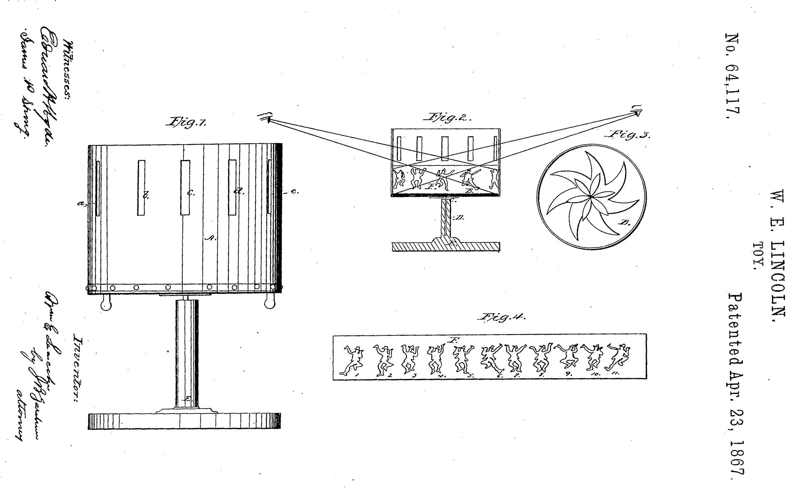
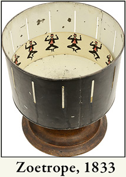
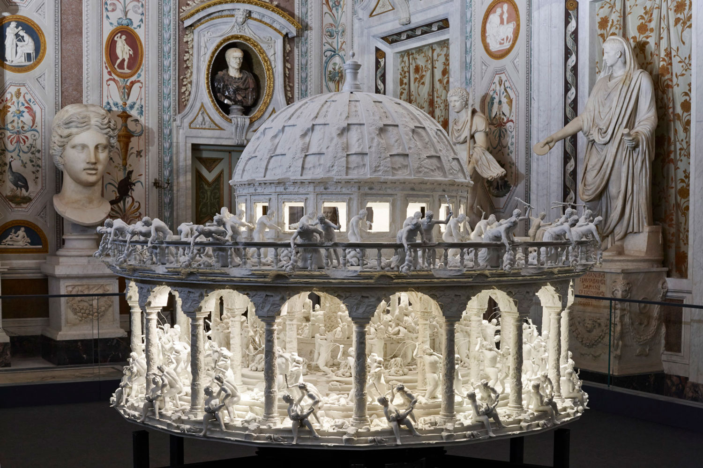
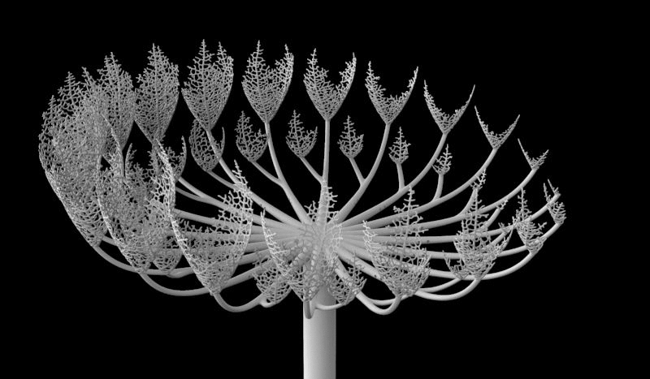
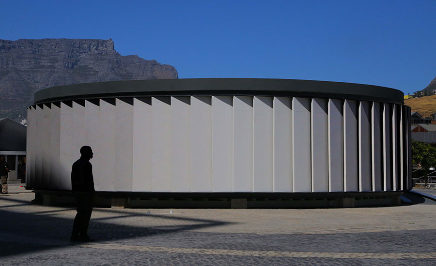
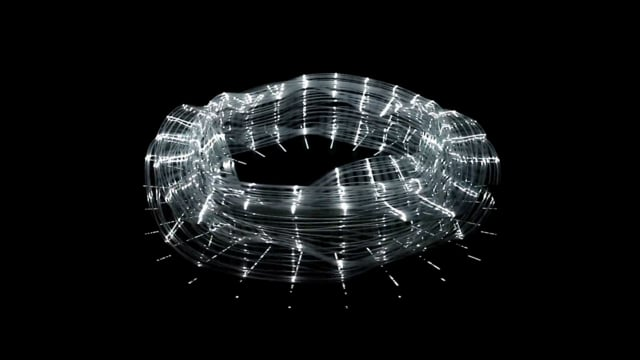

<div class="textcontainer">
<p class="margin"> </p>
<h3>Musings on Final Project Ideas</h3>
<p class="margin"> </p>
Last semester, I discovered Harvard's Collection of Historical Scientific Instruments,
just down the hall from our classroom here at the Science Center. While I was taken aback
by the beauty and engineering of these devices, I was particularly interested in the tools
invented for the psychological sciences, and the ways in which technology was employed to
illustrate and quantify abstract concepts like visual perception, processing speed, and
emotional responses. For my final project, I'd like to recreate a historic scientific, psychological
instrument using contemporary technology.
<p class="margin"> </p>
<h4>My favorite idea at the moment is a [zoetrope](https://en.wikipedia.org/wiki/Zoetrope)</h4>
<p class="margin"> </p>
The zoetrope was essentially the first device created for animation. By displaying a progression of sequential,
static images, an illusion of motion is created for the viewer. Typically, there is a small slit or viewport aligned with each image to focus the viewers attention and exploit the limitations of the human optical system to create the desired effect. Zoetropes have been designed both in a linear fashion (essentially a 2D belt) and cylindrical (a 3D rotating drum).
<p class="margin"> </p>
<em>some images of early zoetropes and the mechanism concept</em>
<p class="margin"> </p>
<!-- <div class="flexrow"> -->


<!-- </div> -->
<p class="margin"> </p>
To make this more contemporary, I would like to use digital fabrication to create the mechanical components - likely
a fair amount of 3D printing, with potential applications for CNC and lasercut pieces depending on the chosen material.
I would likely control the motor with Arduino, perhaps integrating some kind of sensor or direct input to drive the speed (e.g. potentiometer). There are also potential applications for digital images or digital ambient effects for the images, as well as 3D printed geometry instead of 2D images to create the illusion.
I must note that I am not the first person to have this idea, check out some references images below from others who have
experimented with a similar idea.
<p class="margin"> </p>
<div class="flexrow">


</div>
<p class="margin"> </p>
<div class="flexrow">


</div>
</div>